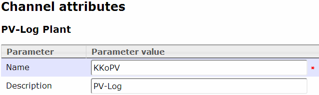
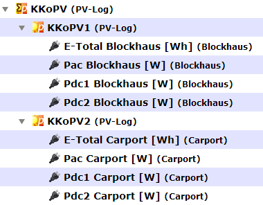
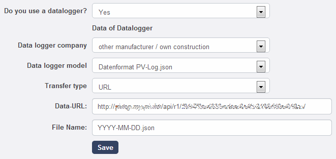

These models provide data for import into PV-Log in JSON via URL.
PV-Log supports "installations" with multiple inverters.
Please note: If you have more than one inverter in your plant with different modules, strings, direction or roof pitches, you should split them into multiple "installations".
The system supports both scenarios and can deliver either whole plant data or single inverter data.
It is handled by 2 models:
● PVLog\Plant
● PVLog\Inverter
The plant model acts as a super group combining all its inverter data.
URL for the HTTP GET requests:
http://your.domain.here/api/r1/[GUID]/YYYY-MM-DD.json
http://your.domain.here/api/r1/[GUID].json
Use either your "plant" or the "inverter" GUID. If no date is provided, today is used by default.
Please note: Don't forget the required .json!
Setup channel tree
Start the definition with the plant, which will combine all your inverters.
Plant
Create a new "PV-Log plant" channel by selecting channel type "PV-Log plant"
and maintain it like this:

Inverter
Create next an inverter channel the same way using channel type "PV-Log Inverter" and assign it afterwards as sub channel to the plant.
Data channels
Now the inverter channel must have at least 2 sub channels with following conventions:
● 1st sub channel: Total or today production of the inverter (must have "consumption" parameter set)
● 2nd sub channel: PAC power of the inverter
● 3rd and following: PDC string powers (optional)
Please note: These requirements can't really checked by the model during data readout, a wrong definition it will result in wrong results!
The whole definition for our installation (2 inverters with 2 strings each) look like this:

The corresponding "plants" on PV-Log:
● http://www.pv-log.com/photovoltaikanlage-kkopv
● http://www.pv-log.com/photovoltaikanlage-kkopv1
● http://www.pv-log.com/photovoltaikanlage-kkopv2
Setup PV-Log
● Open your profile page
● Create a plant with "Add new PV installation"
● In the plant section open "Yield data: Automatic data import / Data logger"
●
Make the following settings (with your domain and GUID):

Examples for fields and formats on PV-Log
http://www.pv-log.com/Resources/Public/Upload/1-2012-04-20-pvlog.json
Check your definitions
Please check your PV-Log definition (Data-URL + File Name) by using a service like http://jsoneditoronline.org/, just use Open > Open URL
Fetch your URL and check for completeness and correctness!
If you use Chrome, I recommend POSTman - REST client or Advanced Rest Client
Created with the Personal Edition of HelpNDoc: Free HTML Help documentation generator